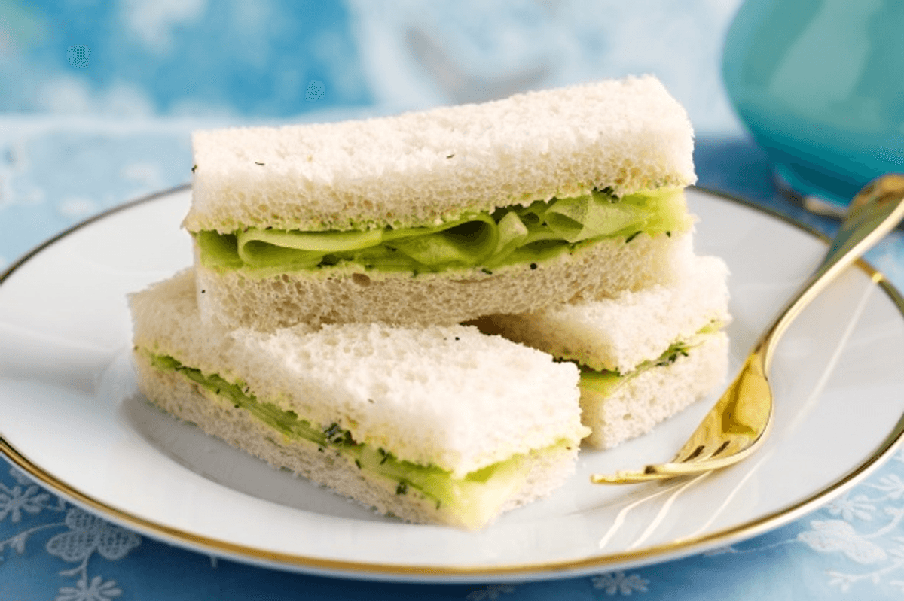

Cucumber Sandwich

Description
Really great appetizer for the summer or anytime. Every time I have served these everyone wants the recipe...and they're so easy! Just be sure to refrigerate the cream cheese mixture overnight!
Ingredients
- 1 (8 ounce) package cream cheese, softened
- 1/2 cup of mayonnaise
- 1(0.7 ounce) package dry Italian salad dressing mix
- 2 loaves French bread, cut into 1 inch slices
- 2 medium cucumbers, sliced
- 1 pinch dried dill weed
Steps
- In a medium bowl, mix together the cream cheese, mayonnaise and Italian dressing mix. Refrigerate for at least 6 hours, or preferably overnight.
- Spread the cream cheese blend onto slices of French bread. Top with a cucumber slice, and sprinkle with dill. You can make as many or few as you like. the cream cheese mixture keeps for about a week in the refrigerator so you can make them over and over again!